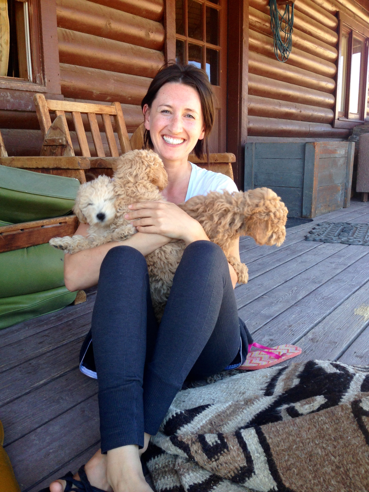

Bio
Roxy Kotzin is a soon to be full stack developer living in Bend, OR. She received her doctorate from Oregon Health and Science University School of Dentistry in 2011 and is currently enrolled in MIT xPro’s Full Stack with MERN program. She is passionate about lifelong learning and creating beautiful design. Her programming skillset at this time includes foundational HTML, CSS and JavaScript. When she’s not coding you can find her reading sci-fi, hiking in the Cascade mountains, or planning her family’s next travel adventure.
